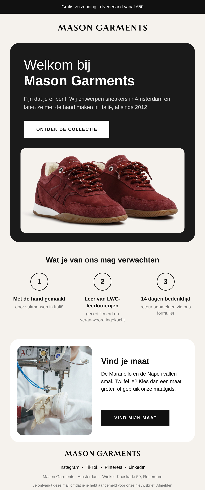
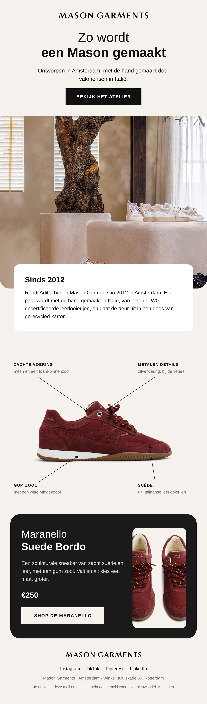

Voorbeelden voor Mason Garments
Drie nieuwe invalshoeken en twee nieuwsbrieven voor Mason Garments, rond de Maranello en jullie verhaal van Amsterdam en Italië.
Drie advertenties en twee nieuwsbrieven, gemaakt met jullie eigen foto's en productinformatie. Een idee van Issey Kooijmans van Digital Essence; niets hiervan is gepubliceerd.
Hoi team Mason Garments, ik heb dit gemaakt omdat jullie verhaal zo helder is: ontworpen in Amsterdam, met de hand gemaakt in Italië, en dat zie je terug in elk detail van de Maranello. Alles is gemaakt met jullie eigen foto's en niets is gepubliceerd. Past het niet, zeg het gerust.
Advertenties · 9:16
Drie invalshoeken om te testen.
Tik op een advertentie om hem groot te bekijken.
Waarom advertenties
Zo groeien schoenenmerken op Instagram.
De meeste mensen ontdekken een nieuw sneakermerk niet via Google, maar tijdens het scrollen op Instagram. Een advertentie wordt na een paar weken moe, dus merken die elke week nieuwe varianten testen houden hun kosten per aankoop laag. Een vaste nieuwsbrief zorgt dat die kopers terugkomen voor het volgende paar.
Aantal advertenties: Meta Advertentiebibliotheek, 11-11-2026.
Nieuwsbrief 1 van 2 · Welkomstmail
Welkom bij Mason Garments
Een rustige welkomstmail in jullie eigen stijl: ontworpen in Amsterdam, met de hand gemaakt in Italië, sinds 2012. Daaronder drie vaste beloftes en een blok dat helpt bij het kiezen van de juiste maat.
- Donkere herokaart met de Maranello Suede Bordo en één duidelijke knop naar de collectie
- Drie beloftes: met de hand gemaakt in Italië, leer van LWG-leerlooierijen, 14 dagen bedenktijd
- Maatblok: de Maranello en de Napoli vallen smal, kies een maat groter

Nieuwsbrief 2 van 2 · Merkverhaal
Zo wordt een Mason gemaakt
Een merkverhaal met jullie eigen winkelfoto en het verhaal sinds 2012. Daarna de Maranello met vier labels voor de details die jullie zelf noemen, en een donkere afsluiting met prijs en knop.
- Hero met jullie eigen interieurfoto en een knop naar het atelier
- Kaart met het verhaal van Rendi Aditia en de Italiaanse productie
- Maranello Suede Bordo met labels: voering, metalen details, gum zool, suède, en een afsluiting met €250

Ritme
Zo kan een week eruitzien.
Dit is een voorbeeld, geen vast pakket. De kracht zit in het ritme: regelmatig nieuwe advertenties testen en je nieuwsbrief vast versturen. Wat werkt, doen we vaker.
- MaNieuwe advertenties liveVerschillende invalshoeken tegelijk testen.
- DiMeekijkenWat pakt de doelgroep op, wat niet?
- WoBijsturenBudget naar wat werkt, de rest eruit.
- DoNieuwsbrief verstuurdVast moment, zodat lezers erop gaan rekenen.
- VrKorte updateWat werkte en wat we volgende week doen.
Benieuwd hoe dit voor Mason Garments werkt?
Een kwartiertje bellen is genoeg om te kijken of het past. Geen verplichtingen.